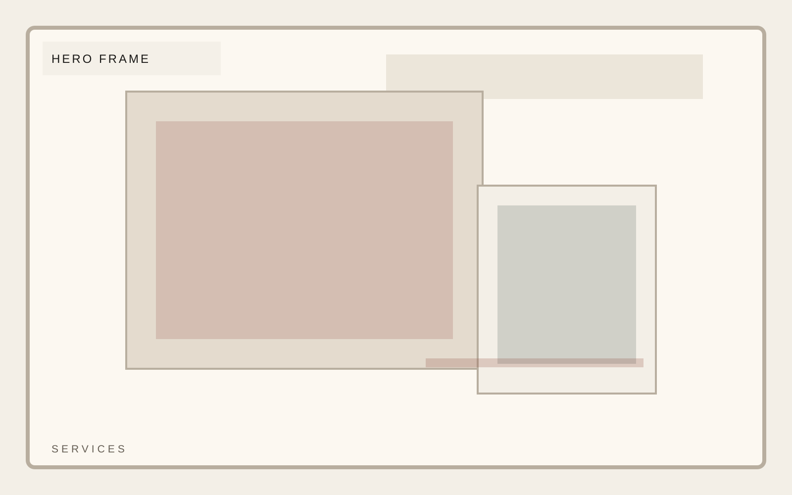

Work mode
Hands-on strategic operator
Independent consultancy
Clarity is a design problem before it is an operating problem.
A consultancy template that prioritizes argument, proof, and a premium reading experience over bloated agency-site patterns. Keep the offer narrow, serious, and easy to understand.

Independent consultancy
Services should be grouped by decision type, not inflated into agency-style packages.
Independent consultancy
Approach belongs in sentence-level clarity. Keep the argument sequential and hard to misread.
Independent consultancy
FAQ should answer the practical questions executives actually ask before they commit to a focused engagement.